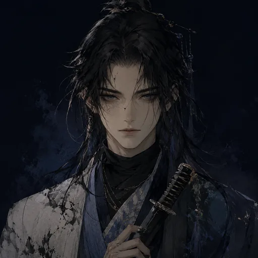
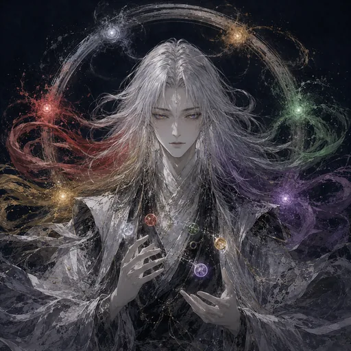

<!DOCTYPE html>
<html lang="ja">
<head>
<meta charset="UTF-8">
<meta name="viewport" content="width=device-width, initial-scale=1.0">
<title>六剋(りくこく) — Boolean→Float RPG</title>
<meta name="description" content="六剋(りくこく) — 斬・刺・打・固・軟・翻、六属性が剋しあうBoolean→Float RPG。あなたが究めた強さは、誰かに対する弱さでもある。">
<meta property="og:type" content="website">
<meta property="og:title" content="六剋(りくこく) — Boolean→Float RPG">
<meta property="og:description" content="六属性が互いを剋する世界。あなたの偏りは、あなたの強さだった。">
<meta property="og:url" content="https://osakenpiro.github.io/rikkoku/">
<meta property="og:image" content="https://osakenpiro.github.io/rikkoku/assets/og-rikkoku.jpg">
<meta name="twitter:card" content="summary_large_image">
<meta name="twitter:creator" content="@osakenpiro">
<style>
  :root {
    --c-zan: #c0c0d8;     /* 斬 銀 */
    --c-shi: #d44a4a;     /* 刺 緋 */
    --c-da:  #d4a853;     /* 打 金 */
    --c-ko:  #8b6f47;     /* 固 茶 */
    --c-nan: #9b6bb5;     /* 軟 紫 */
    --c-hon: #6bb58b;     /* 翻 緑 */
    --c-shiro: #f0f0f8;   /* 白 (まっさら/主人公) */
    --bg: #1a1a24;
    --paper: #f5f0e4;
    --ink: #0a0a14;
    --debris: #d4a853;
  }
  * { box-sizing: border-box; margin: 0; padding: 0; }
  html, body { font-family: "Hiragino Mincho ProN", "游明朝", serif; background: var(--bg); color: var(--paper); min-height: 100vh; }
  body { display: flex; align-items: center; justify-content: center; padding: 20px; }
  #app { width: 100%; max-width: 800px; min-height: 600px; background: var(--ink); border: 2px solid var(--debris); border-radius: 8px; padding: 30px; position: relative; }
  
  h1 { font-size: 64px; text-align: center; letter-spacing: 0.2em; margin-bottom: 10px; color: var(--debris); }
  h2 { font-size: 28px; margin-bottom: 20px; color: var(--debris); border-bottom: 1px solid var(--debris); padding-bottom: 8px; }
  h3 { font-size: 20px; margin-bottom: 10px; }
  .subtitle { text-align: center; font-size: 14px; color: var(--paper); opacity: 0.7; margin-bottom: 40px; letter-spacing: 0.3em; }
  
  button { font-family: inherit; background: var(--paper); color: var(--ink); border: none; padding: 12px 24px; font-size: 16px; cursor: pointer; border-radius: 4px; transition: all 0.2s; margin: 5px; }
  button:hover { background: var(--debris); transform: translateY(-2px); }
  button:disabled { opacity: 0.4; cursor: not-allowed; transform: none; }
  
  .center { display: flex; flex-direction: column; align-items: center; justify-content: center; min-height: 400px; gap: 20px; }
  
  /* キャラ選択 */
  .char-grid { display: grid; grid-template-columns: repeat(3, 1fr); gap: 15px; margin-top: 20px; }
  .char-card { background: rgba(255,255,255,0.05); border: 2px solid transparent; padding: 16px; border-radius: 8px; cursor: pointer; transition: all 0.2s; text-align: center; }
  .char-card:hover { background: rgba(255,255,255,0.1); border-color: var(--debris); transform: translateY(-2px); }
  .char-card.selected { border-color: var(--debris); background: rgba(212,168,83,0.15); }
  .char-icon { font-size: 48px; margin-bottom: 8px; font-weight: bold; }
  .char-name { font-size: 18px; margin-bottom: 6px; }
  .char-desc { font-size: 11px; opacity: 0.75; line-height: 1.5; }
  .char-portrait { width: 100%; max-width: 150px; aspect-ratio: 1/1; object-fit: cover; border-radius: 8px; border: 2px solid rgba(255,255,255,0.12); margin: 0 auto 8px; display: block; }
  .char-thumb { width: 100%; max-width: 88px; aspect-ratio: 1/1; object-fit: cover; border-radius: 6px; margin: 0 auto 6px; display: block; }
  .combatant-portrait { width: 100%; max-width: 120px; aspect-ratio: 1/1; object-fit: cover; border-radius: 8px; display: block; margin: 0 auto 10px; }
  .combatant.enemy .combatant-portrait { transform: scaleX(-1); }
  @keyframes shake { 0%,100%{transform:translateX(0)} 20%{transform:translateX(-8px)} 40%{transform:translateX(7px)} 60%{transform:translateX(-5px)} 80%{transform:translateX(4px)} }
  .combatant.hit { animation: shake 0.4s ease; }
  #flash { position: fixed; inset: 0; background: var(--c-shi); opacity: 0; pointer-events: none; z-index: 50; }
  #flash.on { opacity: 0.28; }
  .share-btn { display:inline-block; background:#1d9bf0; color:#fff; padding:10px 18px; border-radius:6px; font-size:14px; text-decoration:none; margin-top:14px; }
  .share-btn:hover { filter:brightness(1.12); }
  .resume-btn { background: var(--debris); color: var(--ink); }
  .stat-cell.sealed { text-decoration: line-through; opacity: 0.6; outline: 1px solid var(--debris); color: var(--debris); }
  .seal-bar { margin-top: 12px; display: flex; align-items: center; gap: 12px; justify-content: center; flex-wrap: wrap; }
  .seal-hint { font-size: 13px; color: var(--debris); }
  #btn-seal, #btn-seal-cancel { background: transparent; border: 1px solid var(--debris); color: var(--debris); }
  #btn-seal:hover:not(:disabled), #btn-seal-cancel:hover { background: rgba(212,168,83,0.15); }
  .status-badge { display:inline-block; margin-top:8px; padding:3px 10px; border-radius:12px; font-size:12px; background:rgba(107,181,139,0.22); border:1px solid var(--c-hon); color:var(--c-hon); }
  .ending-portrait { width: 100%; max-width: 300px; aspect-ratio: 1/1; object-fit: cover; border-radius: 12px; border: 2px solid var(--debris); margin: 0 auto 24px; display: block; }
  
  /* マップ */
  .map-grid { display: grid; grid-template-columns: repeat(3, 1fr); gap: 15px; margin-top: 20px; }
  .map-node { background: rgba(255,255,255,0.05); border: 2px solid rgba(255,255,255,0.2); padding: 20px; border-radius: 8px; cursor: pointer; text-align: center; transition: all 0.2s; }
  .map-node:hover:not(.defeated) { background: rgba(255,255,255,0.1); border-color: var(--debris); }
  .map-node.defeated { opacity: 0.3; cursor: default; background: rgba(0,0,0,0.3); }
  .map-node.defeated::after { content: "撃破"; display: block; color: var(--debris); margin-top: 8px; font-size: 12px; }
  .map-node.boss { grid-column: 2; border-color: var(--c-shi); }
  .map-node.boss:not(.defeated) { background: rgba(212,74,74,0.1); }
  
  /* バトル */
  .battle { display: grid; grid-template-columns: 1fr 1fr; gap: 20px; margin-bottom: 20px; }
  .combatant { padding: 16px; border-radius: 8px; background: rgba(255,255,255,0.05); }
  .combatant.player { border-left: 4px solid var(--debris); }
  .combatant.enemy { border-left: 4px solid var(--c-shi); }
  .hp-bar-bg { background: rgba(255,255,255,0.1); height: 14px; border-radius: 7px; overflow: hidden; margin-top: 8px; }
  .hp-bar { height: 100%; background: linear-gradient(90deg, var(--c-shi), var(--debris)); transition: width 0.3s; }
  .stat-row { display: grid; grid-template-columns: repeat(6, 1fr); gap: 4px; margin-top: 10px; font-size: 11px; }
  .stat-cell { padding: 4px; text-align: center; border-radius: 3px; background: rgba(255,255,255,0.08); }
  
  .actions { display: grid; grid-template-columns: repeat(3, 1fr); gap: 8px; margin-top: 15px; }
  .actions button { padding: 14px 10px; font-size: 14px; }
  
  .log { background: rgba(0,0,0,0.4); border: 1px solid rgba(255,255,255,0.1); padding: 12px; border-radius: 4px; height: 120px; overflow-y: auto; font-size: 13px; line-height: 1.6; font-family: "Hiragino Sans", sans-serif; }
  .log-entry { margin-bottom: 4px; }
  .log-entry.dmg-high { color: var(--c-shi); }
  .log-entry.dmg-low { color: var(--c-hon); opacity: 0.8; }
  .log-entry.system { color: var(--debris); font-style: italic; }
  
  /* 属性カラー */
  .attr-zan { color: var(--c-zan); }
  .attr-shi { color: var(--c-shi); }
  .attr-da  { color: var(--c-da); }
  .attr-ko  { color: var(--c-ko); }
  .attr-nan { color: var(--c-nan); }
  .attr-hon { color: var(--c-hon); }
  .attr-shiro { color: var(--c-shiro); }
  
  .btn-attr-zan { background: var(--c-zan); color: var(--ink); }
  .btn-attr-shi { background: var(--c-shi); color: var(--paper); }
  .btn-attr-da  { background: var(--c-da); color: var(--ink); }
  .btn-attr-ko  { background: var(--c-ko); color: var(--paper); }
  .btn-attr-nan { background: var(--c-nan); color: var(--paper); }
  .btn-attr-hon { background: var(--c-hon); color: var(--ink); }
  
  /* 白(主人公)キャラ用 */
  .char-card.blank-char { border-style: dashed; border-color: var(--c-shiro); grid-column: span 3; max-width: 280px; margin: 10px auto 0; }
  .char-card.blank-char .char-icon { color: var(--c-shiro); }
  
  /* エンディング */
  .ending { text-align: center; padding: 40px 0; }
  .ending h1 { font-size: 48px; margin-bottom: 30px; }
  .ending p { font-size: 18px; line-height: 2; margin-bottom: 20px; opacity: 0.9; }
  
  /* ヘッダー */
  .header { display: flex; justify-content: space-between; align-items: center; margin-bottom: 20px; padding-bottom: 10px; border-bottom: 1px solid rgba(255,255,255,0.2); }
  .header-title { font-size: 20px; color: var(--debris); }
  .header-info { font-size: 13px; opacity: 0.7; }
</style>
</head>
<body>
<div id="app"></div>
<div id="flash"></div>

<script>
// ============================================================
// 六剋 (りくこく) — Boolean→Float RPG プロトタイプ v0
// 2026-05-22 / osakenpiro × Claude
// ============================================================

// 属性定義 (時計回り循環: 斬→翻→軟→打→固→刺→斬)
const ATTRS = ['zan', 'hon', 'nan', 'da', 'ko', 'shi'];
const ATTR_NAMES = {
  zan: '斬', hon: '翻', nan: '軟', da: '打', ko: '固', shi: '刺'
};
const ATTR_DESC = {
  zan: '線で切る', hon: '反転で乱す', nan: '柔らかさで受ける',
  da: '面で打つ', ko: '硬さで弾く', shi: '点で突く'
};

// 相剋: ある属性 X の「得意な相手 (時計回り隣)」と「天敵 (反時計回り隣)」
function rivalry(attacker, defender) {
  const ai = ATTRS.indexOf(attacker);
  const di = ATTRS.indexOf(defender);
  if (ai < 0 || di < 0) return 1.0;
  const next = ATTRS[(ai + 1) % 6];  // 得意
  const prev = ATTRS[(ai + 5) % 6];  // 天敵
  if (defender === next) return 1.5;  // 有効
  if (defender === prev) return 0.5;  // 不利
  if (defender === attacker) return 1.0; // ミラー (同属性は中立、ただし防御側に同属性ボーナス別途)
  return 1.0;
}

// キャラ定義 (各属性特化、自属性Lv8、他属性Lv1)
function makeCharacter(name, mainAttr) {
  const stats = {};
  ATTRS.forEach(a => stats[a] = a === mainAttr ? 8 : 1);
  return {
    name, mainAttr, stats,
    maxHp: 0, hp: 0  // 後で算出
  };
}
function recalcHp(char) {
  const total = Object.values(char.stats).reduce((s,v)=>s+v, 0);
  char.maxHp = total * 5;
  char.hp = char.maxHp;
}

const ENEMY_CHARS = [
  makeCharacter('斬の長 (ザン)', 'zan'),
  makeCharacter('翻の女 (ハン)', 'hon'),
  makeCharacter('軟の僧 (ナン)', 'nan'),
  makeCharacter('打の鬼 (ダ)',  'da'),
  makeCharacter('固の盾 (コ)',  'ko'),
  makeCharacter('刺の影 (シ)',  'shi')
];

// 白キャラ(主人公・自由ビルド型): 全属性Lv.2均等、相剋に参加しない
function makeBlankCharacter() {
  const stats = {};
  ATTRS.forEach(a => stats[a] = 2);
  return {
    name: '白の素 (シロ)',
    mainAttr: 'shiro',  // 特殊属性: 相剋ループに参加しない
    stats,
    maxHp: 0,
    hp: 0,
    isBlank: true
  };
}

// 選択画面に表示する全キャラ (6特化 + 1白)
const PLAYABLE_CHARS = [...ENEMY_CHARS, makeBlankCharacter()];

// ラスボス (全属性Lv7)
function makeBoss() {
  const stats = {};
  ATTRS.forEach(a => stats[a] = 7);
  const boss = { name: '虚無のループ (リン)', mainAttr: null, stats, maxHp: 0, hp: 0 };
  recalcHp(boss);
  return boss;
}

// ============================================================
// ゲーム状態
// ============================================================
let game = {
  screen: 'title',
  player: null,         // プレイヤーキャラ (deep copy)
  enemies: [],          // 残りの敵
  defeated: [],         // 撃破済み (名前で記録)
  currentEnemy: null,
  log: [],
  isBoss: false
};

// ============================================================
// 描画
// ============================================================
function $app() { return document.getElementById('app'); }

function render() {
  const fn = {
    title: renderTitle,
    select: renderSelect,
    map: renderMap,
    battle: renderBattle,
    result: renderResult,
    ending: renderEnding,
    gameover: renderGameOver
  }[game.screen];
  $app().innerHTML = fn();
  if (['map','battle','result'].includes(game.screen)) saveGame();
  attachListeners();
  if (game._fx && game.screen === 'battle') { flashHit(game._fx); game._fx = null; }
}

function renderTitle() {
  return `
    <h1>六剋</h1>
    <div class="subtitle">り　く　こ　く</div>
    <div class="center">
      <p style="text-align:center; line-height:2; opacity:0.85; font-size:15px;">
        斬・刺・打・固・軟・翻 ──<br>
        六つの属性が、互いを剋(こく)する世界。<br><br>
        あなたが究めた強さは、同時に、<br>
        誰かに対する弱さでもある。
      </p>
      ${hasResumableSave() ? '<button id="btn-resume" class="resume-btn">つづきから</button>' : ''}
      <button id="btn-start">はじめる</button>
      <a class="share-btn" href="${shareUrl()}" target="_blank" rel="noopener">𝕏 でシェア</a>
      <p style="font-size:11px; opacity:0.5; margin-top:20px;">
        Boolean→Float RPG v1.3<br>
        © 2026 osakenpiro
      </p>
    </div>
  `;
}

function renderSelect() {
  const cards = PLAYABLE_CHARS.map((c, i) => {
    if (c.isBlank) {
      return `
        <div class="char-card blank-char" data-idx="${i}">
          
          <div class="char-name">${c.name}</div>
          <div class="char-desc">
            全属性: Lv.2 均等<br>
            主属性なし・相剋ニュートラル<br>
            <br>
            <em>序盤は厳しい。後半に化ける。</em><br>
            自由ビルド型・主人公キャラ
          </div>
        </div>
      `;
    }
    return `
      <div class="char-card" data-idx="${i}">
        
        <div class="char-name">${c.name}</div>
        <div class="char-desc">
          主属性: <span class="attr-${c.mainAttr}">${ATTR_NAMES[c.mainAttr]}</span> Lv.8<br>
          ${ATTR_DESC[c.mainAttr]}<br>
          <br>
          得意: <span class="attr-${ATTRS[(ATTRS.indexOf(c.mainAttr)+1)%6]}">${ATTR_NAMES[ATTRS[(ATTRS.indexOf(c.mainAttr)+1)%6]]}</span><br>
          天敵: <span class="attr-${ATTRS[(ATTRS.indexOf(c.mainAttr)+5)%6]}">${ATTR_NAMES[ATTRS[(ATTRS.indexOf(c.mainAttr)+5)%6]]}</span>
        </div>
      </div>
    `;
  }).join('');
  return `
    <h2>キャラ選択</h2>
    <p style="opacity:0.8; margin-bottom:10px; font-size:14px;">六人の特化型か、まっさらな自由型か。選んだ偏り(あるいは偏りのなさ)が、あなたのビルドになる。</p>
    <div class="char-grid">${cards}</div>
  `;
}

function renderMap() {
  // 白キャラ選択時は全6キャラが敵、特化キャラ選択時は同属性以外の5キャラが敵
  const remaining = game.player.isBlank
    ? ENEMY_CHARS
    : ENEMY_CHARS.filter(c => c.mainAttr !== game.player.mainAttr);
  const nodes = remaining.map(c => {
    const defeated = game.defeated.includes(c.name);
    return `
      <div class="map-node ${defeated?'defeated':''}" data-name="${c.name}">
        
        <div>${c.name}</div>
        <div style="font-size:11px; opacity:0.7; margin-top:5px;">${ATTR_DESC[c.mainAttr]}</div>
      </div>
    `;
  }).join('');
  
  const totalEnemies = game.player.isBlank ? 6 : 5;
  const allDefeated = remaining.every(c => game.defeated.includes(c.name));
  const bossNode = `
    <div class="map-node boss" data-name="BOSS" ${allDefeated?'':'style="opacity:0.3;cursor:not-allowed"'}>
      
      <div>虚無のループ</div>
      <div style="font-size:11px; opacity:0.7; margin-top:5px;">${allDefeated?'最終決戦':totalEnemies+'人を倒すと現れる'}</div>
    </div>
  `;
  
  return `
    <div class="header">
      <div class="header-title">マップ</div>
      <div class="header-info">${game.player.name} / HP ${game.player.hp}/${game.player.maxHp} / 撃破 ${game.defeated.length}/${totalEnemies}</div>
    </div>
    <h2>誰から攻める？</h2>
    <p style="opacity:0.8; margin-bottom:10px; font-size:13px;">
      残る五人と、その先のラスボス。順番はあなた次第。
    </p>
    <div class="map-grid">${nodes}</div>
    <div style="margin-top:20px;">${bossNode}</div>
    <div style="text-align:center; margin-top:25px;">
      <button id="btn-rest" ${game.player.hp === game.player.maxHp ? 'disabled' : ''}>休む (HP全回復)</button>
    </div>
  `;
}

function renderBattle() {
  const p = game.player;
  const e = game.currentEnemy;
  
  const playerStats = ATTRS.map(a => 
    `<div class="stat-cell attr-${a}">${ATTR_NAMES[a]}<br>${p.stats[a]}</div>`
  ).join('');
  const seal = game.seal || { mode:false, used:false, attr:null };
  const enemyStats = ATTRS.map(a => {
    const sealed = seal.attr === a;
    return `<div class="stat-cell attr-${a} ${sealed?'sealed':''}">${ATTR_NAMES[a]}<br>${sealed?'封':e.stats[a]}</div>`;
  }).join('');
  
  // 技ボタン: 通常は自属性で攻撃、封じるモード時は敵属性を封印対象に
  const actions = seal.mode
    ? ATTRS.map(a => {
        const lv = e.stats[a];
        const disabled = lv <= 0 ? 'disabled' : '';
        return `<button class="btn-attr-${a}" data-seal="${a}" ${disabled}>封：${ATTR_NAMES[a]}<br><span style="font-size:11px">Lv.${lv}</span></button>`;
      }).join('')
    : ATTRS.map(a => {
        const lv = p.stats[a];
        const disabled = lv <= 0 ? 'disabled' : '';
        return `<button class="btn-attr-${a}" data-attr="${a}" ${disabled}>${ATTR_NAMES[a]}<br><span style="font-size:11px">Lv.${lv}</span></button>`;
      }).join('');
  
  const logHtml = game.log.slice(-15).map(l => `<div class="log-entry ${l.cls||''}">${l.text}</div>`).join('');
  
  return `
    <div class="header">
      <div class="header-title">戦闘</div>
      <div class="header-info">vs ${e.name}</div>
    </div>
    <div class="battle">
      <div class="combatant player">
        
        <h3>${p.name}</h3>
        <div>HP: ${p.hp}/${p.maxHp}</div>
        <div class="hp-bar-bg"><div class="hp-bar" style="width:${(p.hp/p.maxHp*100)}%"></div></div>
        <div class="stat-row">${playerStats}</div>
      </div>
      <div class="combatant enemy">
        
        <h3>${e.name}</h3>
        <div>HP: ${e.hp}/${e.maxHp}</div>
        <div class="hp-bar-bg"><div class="hp-bar" style="width:${(e.hp/e.maxHp*100)}%"></div></div>
        ${(game.enemyStatus && game.enemyStatus.hanten > 0) ? `<div class="status-badge">反転 ${game.enemyStatus.hanten}</div>` : ''}
        <div class="stat-row">${enemyStats}</div>
      </div>
    </div>
    <div class="actions">${actions}</div>
    <div class="seal-bar">
      ${seal.mode
        ? `<span class="seal-hint">封じる属性を選べ ── 相手の強みを Lv.0 に。</span><button id="btn-seal-cancel">やめる</button>`
        : `<button id="btn-seal" ${seal.used?'disabled':''}>${seal.used?'封印済み':'封じる（1戦1回）'}</button>`}
    </div>
    <div class="log" id="log">${logHtml}</div>
  `;
}

function renderResult() {
  const e = game.currentEnemy;
  const p = game.player;
  const isBoss = game.isBoss;
  return `
    <div class="center">
      <h2>${isBoss ? '勝利！' : '勝利'}</h2>
      <p style="font-size:18px;">${e.name} を撃破した。</p>
      <p style="opacity:0.85; line-height:2;">
        撃破経験で、各属性に経験値が分配された。<br>
        ${ATTRS.map(a => {
          const inc = game.lastGain[a] || 0;
          if (inc === 0) return '';
          return `<span class="attr-${a}">${ATTR_NAMES[a]}</span> +${inc}`;
        }).filter(s=>s).join(' / ')}
      </p>
      <p>現在のステータス:</p>
      <div class="stat-row" style="font-size:14px;">
        ${ATTRS.map(a => `<div class="stat-cell attr-${a}">${ATTR_NAMES[a]} Lv.${p.stats[a]}</div>`).join('')}
      </div>
      ${isBoss ? `<button id="btn-ending">エンディングへ</button>` : `<button id="btn-map">マップへ戻る</button>`}
    </div>
  `;
}

function renderEnding() {
  return `
    <div class="ending">
      <h1>${game.player.name} の物語</h1>
      
      <p>${game.player.name} は、虚無のループを断ち切った。</p>
      <p>偏ったまま、強くなった。<br>そして、偏ったまま、世界を救った。</p>
      <p style="font-size:14px; opacity:0.7; margin-top:30px;">
        最終ステータス:
      </p>
      <div class="stat-row" style="font-size:14px; max-width:500px; margin:10px auto;">
        ${ATTRS.map(a => `<div class="stat-cell attr-${a}">${ATTR_NAMES[a]}<br>Lv.${game.player.stats[a]}</div>`).join('')}
      </div>
      <p style="font-size:14px; opacity:0.7; margin-top:30px;">
        誰もが、自分の偏りで世界を見ている。<br>
        あなたの偏りは、あなたの強さだった。
      </p>
      <a class="share-btn" href="${shareUrl('六剋(りくこく)をクリアした。偏ったまま、世界を救った。')}" target="_blank" rel="noopener">𝕏 で結果をシェア</a>
      <button id="btn-restart" style="margin-top:30px;">最初から</button>
    </div>
  `;
}

function renderGameOver() {
  return `
    <div class="ending">
      <h1 style="color:#d44a4a">敗北</h1>
      <p>${game.player.name} は、${game.currentEnemy.name} に敗れた。</p>
      <p style="opacity:0.85;">偏りすぎたか、それとも、まだ偏りが足りなかったのか。</p>
      <button id="btn-restart" style="margin-top:30px;">最初から</button>
    </div>
  `;
}

// ============================================================
// イベント
// ============================================================
function attachListeners() {
  const screen = game.screen;
  if (screen === 'title') {
    document.getElementById('btn-start').onclick = () => { clearSave(); game.screen = 'select'; render(); };
    const rb = document.getElementById('btn-resume');
    if (rb) rb.onclick = () => { const s = loadSave(); if (s) { game = s; render(); } };
  } else if (screen === 'select') {
    document.querySelectorAll('.char-card').forEach(card => {
      card.onclick = () => {
        const idx = +card.dataset.idx;
        const proto = PLAYABLE_CHARS[idx];
        // deep copy
        game.player = { 
          name: proto.name, 
          mainAttr: proto.mainAttr, 
          stats: {...proto.stats}, 
          maxHp: 0, 
          hp: 0,
          isBlank: proto.isBlank || false
        };
        recalcHp(game.player);
        // 敵リスト初期化: 白キャラなら6体全部、特化キャラなら同属性以外の5体
        const enemyPool = game.player.isBlank
          ? ENEMY_CHARS
          : ENEMY_CHARS.filter(c => c.mainAttr !== proto.mainAttr);
        game.enemies = enemyPool.map(c => {
          const enemy = { name: c.name, mainAttr: c.mainAttr, stats: {...c.stats}, maxHp: 0, hp: 0 };
          recalcHp(enemy);
          return enemy;
        });
        game.defeated = [];
        game.screen = 'map';
        render();
      };
    });
  } else if (screen === 'map') {
    document.querySelectorAll('.map-node').forEach(node => {
      if (node.classList.contains('defeated')) return;
      node.onclick = () => {
        const name = node.dataset.name;
        if (name === 'BOSS') {
          const allDefeated = game.enemies.every(e => game.defeated.includes(e.name));
          if (!allDefeated) return;
          game.currentEnemy = makeBoss();
          game.isBoss = true;
        } else {
          const enemy = game.enemies.find(e => e.name === name);
          if (!enemy) return;
          // フレッシュコピー
          game.currentEnemy = { ...enemy, stats: {...enemy.stats}, maxHp: enemy.maxHp, hp: enemy.maxHp };
          game.isBoss = false;
        }
        game.log = [];
        game.seal = { mode:false, used:false, attr:null };
        game.enemyStatus = { hanten: 0 };
        addLog(`${game.currentEnemy.name} が立ちはだかる。`, 'system');
        game.screen = 'battle';
        render();
      };
    });
    const restBtn = document.getElementById('btn-rest');
    if (restBtn) restBtn.onclick = () => {
      game.player.hp = game.player.maxHp;
      render();
    };
  } else if (screen === 'battle') {
    document.querySelectorAll('.actions button').forEach(btn => {
      btn.onclick = () => {
        if (game.seal && game.seal.mode) { sealAttr(btn.dataset.seal); }
        else { playerAttack(btn.dataset.attr); }
      };
    });
    const sealBtn = document.getElementById('btn-seal');
    if (sealBtn) sealBtn.onclick = () => { if (!game.seal) game.seal = { mode:false, used:false, attr:null }; game.seal.mode = true; render(); };
    const sealCancel = document.getElementById('btn-seal-cancel');
    if (sealCancel) sealCancel.onclick = () => { game.seal.mode = false; render(); };
  } else if (screen === 'result') {
    const m = document.getElementById('btn-map');
    if (m) m.onclick = () => { game.screen = 'map'; render(); };
    const e = document.getElementById('btn-ending');
    if (e) e.onclick = () => { clearSave(); game.screen = 'ending'; render(); };
  } else if (screen === 'ending' || screen === 'gameover') {
    document.getElementById('btn-restart').onclick = () => {
      clearSave();
      game = { screen: 'title', player: null, enemies: [], defeated: [], currentEnemy: null, log: [], isBoss: false };
      render();
    };
  }
}

// ============================================================
// 戦闘ロジック
// ============================================================
function calcDamage(attacker, defender, attr, invert) {
  const baseAtk = attacker.stats[attr];
  if (baseAtk <= 0) return 0;
  
  // 相剋補正（反転状態異常時は 得意↔天敵 をスワップ）
  let rivalryMult = rivalry(attr, defender.mainAttr);
  if (invert) { if (rivalryMult > 1.2) rivalryMult = 0.5; else if (rivalryMult < 0.8) rivalryMult = 1.5; }
  
  // 防御側補正: 同属性防御は +50%、攻撃属性の天敵 (= 攻撃属性 +1) を伸ばしてると -30%
  let defStat = 0;
  if (defender.mainAttr === attr) defStat = defender.stats[attr] * 0.5;
  // 防御側が「攻撃属性の得意とする相手」属性を伸ばしている = 攻撃属性の天敵を持つ = 攻撃が通りやすい (補正なし)
  // 単純化のため同属性防御ボーナスのみ実装
  
  // 基礎ダメージ
  let dmg = baseAtk * 3 * rivalryMult - defStat;
  // ばらつき ±20%
  dmg *= (0.8 + Math.random() * 0.4);
  dmg = Math.max(1, Math.floor(dmg));
  
  return { dmg, rivalryMult, attr };
}

function sealAttr(attr) {
  const e = game.currentEnemy;
  if (!attr || !game.seal || game.seal.used || e.stats[attr] <= 0) return;
  e.stats[attr] = 0;
  game.seal.attr = attr;
  game.seal.used = true;
  game.seal.mode = false;
  addLog(`${game.player.name} は ${e.name} の <span class="attr-${attr}">${ATTR_NAMES[attr]}</span> を封じた！ (Lv.0)`, 'system');
  render();
  setTimeout(() => enemyAttack(), 700);
}

function playerAttack(attr) {
  const p = game.player;
  const e = game.currentEnemy;
  const result = calcDamage(p, e, attr);
  
  let mark = '';
  if (result.rivalryMult > 1.2) mark = ' (有効！)';
  else if (result.rivalryMult < 0.8) mark = ' (いまひとつ…)';
  
  e.hp = Math.max(0, e.hp - result.dmg);
  game._fx = 'enemy';
  addLog(`${p.name} の <span class="attr-${attr}">${ATTR_NAMES[attr]}</span>！ ${e.name} に ${result.dmg} ダメージ${mark}`, result.rivalryMult > 1.2 ? 'dmg-high' : (result.rivalryMult < 0.8 ? 'dmg-low' : ''));
  
  if (e.hp <= 0) {
    addLog(`${e.name} を撃破した！`, 'system');
    setTimeout(() => victory(), 600);
    render();
    return;
  }
  
  if (attr === 'hon') {
    game.enemyStatus = game.enemyStatus || { hanten: 0 };
    game.enemyStatus.hanten = 2;
    addLog(`${e.name} を反転させた！ 2ターン、相剋が逆さに乱れる。`, 'system');
  }
  render();
  // 敵のターン
  setTimeout(() => enemyAttack(), 700);
}

function enemyAttack() {
  const p = game.player;
  const e = game.currentEnemy;
  
  // 敵AI: プレイヤーの天敵属性を優先(白キャラには天敵なし=ランダム)
  let chosen = null;
  if (!p.isBlank) {
    const playerTenteki = ATTRS[(ATTRS.indexOf(p.mainAttr) + 5) % 6];
    if (e.stats[playerTenteki] > 0 && Math.random() < 0.7) {
      chosen = playerTenteki;
    }
  }
  if (!chosen) {
    const usable = ATTRS.filter(a => e.stats[a] > 0);
    chosen = usable[Math.floor(Math.random() * usable.length)];
  }
  
  const inverted = !!(game.enemyStatus && game.enemyStatus.hanten > 0);
  const result = calcDamage(e, p, chosen, inverted);
  let mark = '';
  if (result.rivalryMult > 1.2) mark = ' (有効…！)';
  else if (result.rivalryMult < 0.8) mark = ' (いまひとつ)';
  if (inverted) { mark += ' [反転]'; game.enemyStatus.hanten--; }
  
  p.hp = Math.max(0, p.hp - result.dmg);
  game._fx = 'player';
  addLog(`${e.name} の <span class="attr-${chosen}">${ATTR_NAMES[chosen]}</span>！ ${p.name} に ${result.dmg} ダメージ${mark}`, result.rivalryMult > 1.2 ? 'dmg-high' : (result.rivalryMult < 0.8 ? 'dmg-low' : ''));
  
  if (p.hp <= 0) {
    addLog(`${p.name} は倒れた…`, 'system');
    setTimeout(() => { clearSave(); game.screen = 'gameover'; render(); }, 800);
    render();
    return;
  }
  render();
}

function victory() {
  const e = game.currentEnemy;
  const p = game.player;
  
  // 経験値分配: 敵の主属性が +2、その隣2つに +1 ずつ (倒したことで広く吸収)
  const gain = {};
  ATTRS.forEach(a => gain[a] = 0);
  if (game.isBoss) {
    // ボス撃破は各属性 +1
    ATTRS.forEach(a => gain[a] = 1);
  } else {
    const mi = ATTRS.indexOf(e.mainAttr);
    gain[e.mainAttr] = 2;
    gain[ATTRS[(mi+1)%6]] = 1;
    gain[ATTRS[(mi+5)%6]] = 1;
  }
  ATTRS.forEach(a => p.stats[a] += gain[a]);
  game.lastGain = gain;
  
  // HP更新 (合計が増えたので)
  const oldRatio = p.hp / p.maxHp;
  recalcHp(p);
  p.hp = Math.floor(p.maxHp * oldRatio);  // 比率維持
  
  if (!game.isBoss) game.defeated.push(e.name);
  
  game.screen = 'result';
  render();
}

const SAVE_KEY = 'rikkoku-save-v1';
function saveGame(){ try{ localStorage.setItem(SAVE_KEY, JSON.stringify(game)); }catch(e){} }
function loadSave(){ try{ const s=localStorage.getItem(SAVE_KEY); return s?JSON.parse(s):null; }catch(e){ return null; } }
function clearSave(){ try{ localStorage.removeItem(SAVE_KEY); }catch(e){} }
function hasResumableSave(){ const s=loadSave(); return !!(s && s.player && ['map','battle','result'].includes(s.screen)); }
function shareUrl(extra){ const text=extra||'六剋(りくこく) — 六属性が剋しあうBoolean→Float RPG。あなたの偏りは、あなたの強さだった。'; const url='https://osakenpiro.github.io/rikkoku/'; return 'https://twitter.com/intent/tweet?text='+encodeURIComponent(text)+'&url='+encodeURIComponent(url)+'&hashtags='+encodeURIComponent('全人類UX改善,rikkoku'); }
function flashHit(side){ const el=document.querySelector('.combatant.'+side); if(el){ el.classList.add('hit'); setTimeout(()=>el.classList.remove('hit'),420);} const f=document.getElementById('flash'); if(f){ f.classList.add('on'); setTimeout(()=>f.classList.remove('on'),90);} }

function addLog(text, cls) {
  game.log.push({ text, cls });
}

// ============================================================
// 起動
// ============================================================
render();

</script>
</body>
</html>
